Lucy n’a toujours aucune nouvelle de Root.
Elle est étonnée.
Et, malgré le peu de temps depuis lequel elles se connaissent, elle commence à s’inquiéter.
Root devait être rentrée depuis plusieurs jours.
Lucy décide finalement de lancer une recherche avec IA2.
Elle découvre rapidement que Root n’est toujours pas signalée comme étant revenue sur le territoire américain.
Avec son métier, ses nombreux voyages n’ont rien d’anormal.
Mais IA2 relève quelque chose de beaucoup plus troublant.
Root était présente dans plusieurs des mêmes pays que la Tueuse Caméléon.
Et durant les mêmes périodes.
Analyse IA2
Examiner les éléments relevés.
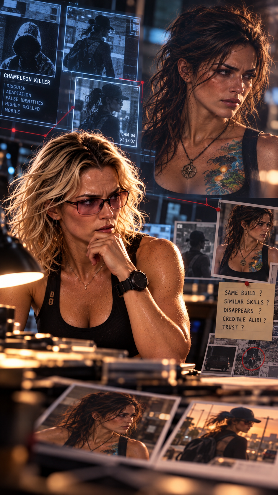
Lucy fixe les données quelques secondes.
— Ça commence à faire beaucoup de coïncidences.
Pourtant, son instinct lui souffle presque immédiatement que quelque chose ne va pas dans cette hypothèse.
IA2 lui rappelle qu’un lien émotionnel s’est créé entre elle et Root au cours de leur soirée au restaurant.
Cela peut fausser son jugement.
Lucy ne peut pas totalement le nier.
En très peu de temps, elle s’est attachée à Root.
Sans réellement savoir pourquoi.
— Tu as raison. Elle pourrait correspondre au profil de la femme que nous recherchons.
Elle secoue néanmoins la tête.
— Mais je n’y crois pas. Quelque chose au fond de moi me dit que ce n’est pas elle.
IA2 lui rappelle que ces éléments peuvent n’être que des coïncidences.
Ou, au contraire, constituer les premiers indices à charge contre Root.
— Si nous découvrons un lien sérieux, tu devras la confronter.
— Je sais. Et tu me connais suffisamment pour savoir que je ne dérogerai pas à mon devoir.
Lucy décide de creuser davantage.
Elle veut tout savoir sur Root Tempass.
Et pour cela, elle demande l’aide de Clive.
Celui-ci se montre étrangement hésitant.
— Il y a quelque chose que je ne t’ai jamais raconté.
— Je sens que ça va me plaire.
Clive esquisse un sourire embarrassé.
— J’ai essayé de cambrioler l’hacienda de Root.
Lucy le fixe.
— Pardon ?
— Et son musée.
— Clive…
— Plusieurs fois.
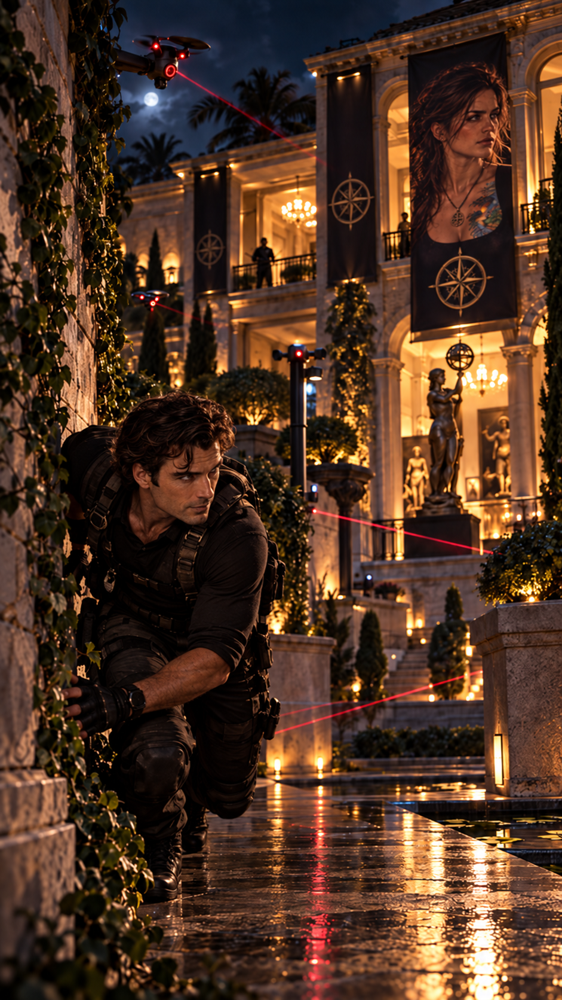
— Et ?
Clive soupire.
— Je n’ai jamais réussi à lui voler quoi que ce soit.
Lucy éclate presque de rire.
— Le Magicien n’a pas réussi à cambrioler une archéologue ?
— Tu peux te moquer si tu veux, mais j’arrive à peine à pénétrer dans ses propriétés.
Dès que je suis à l’intérieur, je suis détecté et littéralement reconduit vers la sortie.
— Elle a des gardes ?
— Non.
— Une équipe de sécurité privée ?
— Pas vraiment.
Clive devient beaucoup plus sérieux.
— Ton amie Root possède le système de sécurité le plus sophistiqué que j’aie jamais rencontré.
— À ce point-là ?
— À ce point-là.
Il utilise des sortes de drones miniatures.
Ils me tendent des pièges, me filment, anticipent mes déplacements et me poussent exactement là où ils veulent que j’aille.
— Tu veux dire qu’il apprend de tes réactions ?
— Exactement.
À chacune de mes tentatives, le système était différent.
Plus efficace. Plus adapté à ma manière d’agir.
— Lors de ma dernière tentative, le message était parfaitement clair :
échec et mat.
Lucy sourit.
— Tu dramatises.
— Pas cette fois.
J’ai compris qu’il me laissait encore repartir, mais que je ne devais plus revenir.
— Et tu as obéi ?
— Oui.
Lucy le dévisage.
— Là, tu commences vraiment à m’inquiéter.
— Moi aussi, ça m’a inquiété.
Lucy réfléchit.
Si elle veut comprendre Root, elle va devoir se rapprocher d’elle.
Entrer dans son quotidien.
Comprendre son environnement.
Sa vie.
Et surtout…
retrouver Root.
Une fois arrivée à l’aéroport de Đồng Hới, à une cinquantaine de kilomètres de sa destination finale, Root s’assure immédiatement qu’elle n’a pas été suivie.
Puis elle se met en route sans perdre de temps.
Sa mission est claire :
retrouver la boîte de Pandore.
Root est historienne, archéologue et aventurière.
Une sorte d’Indiana Jones ou de Lara Croft des temps modernes.
Grâce à Peter, elle dispose également des technologies les plus avancées dont elle pourrait avoir besoin sur le terrain.
Elle suit scrupuleusement les indications de Hope.
Après avoir traversé une forêt dense et plusieurs cours d’eau, elle approche enfin de l’entrée secrète de la grotte.
Mais quelque chose la dérange.
Depuis un moment, elle ressent une présence.
Malgré toutes les précautions prises, Root sait qu’elle n’est pas seule.
Elle se sent observée.
Elle déploie un drone miniature.
Vision thermique.
Détection électromagnétique.
Analyse des mouvements.
Rien.
Root observe les données quelques secondes.
Puis elle comprend.
Si son instinct lui affirme que quelqu’un est là alors que les appareils de Peter ne détectent absolument rien, il n’existe qu’une possibilité réellement inquiétante.
Le Fantôme de l’Ombre.
Amy.
Root décide d’utiliser l’une des techniques que Hope lui a enseignées.
Elle n’a pas besoin de semer Amy définitivement.
Il lui suffit de gagner du temps.
Root modifie plusieurs fois son itinéraire, disparaît volontairement de certaines zones de visibilité, efface certaines traces et en crée de fausses.
Commence alors un étrange jeu de pistes.
Root contre un adversaire qu’elle ne voit jamais.
Plusieurs jours s’écoulent.
Root avance, détourne son trajet, revient sur ses pas, brouille sa progression.
Finalement, une astuce enseignée par Hope porte ses fruits.
Root obtient quelques heures d’avance.
Peut-être moins.
Cela suffira.
Root pénètre dans la grotte et s’enfonce dans son immensité.
Plusieurs mini-drones la précèdent.
D’autres restent volontairement en retrait.
Grâce à ses lunettes infrarouges et à la cartographie des drones, elle progresse rapidement.
— Très bien…
Comment suis-je censée retrouver une boîte à peine plus grosse que ma main dans une grotte qui s’étend sur des kilomètres ?
— Hope… dans quoi m’as-tu encore embarquée ?
Puis elle atteint enfin ce que les indications de Hope appellent :
la Cascade des Secrets Enfouis.
Lorsqu’elle la découvre, Root s’immobilise.
La chute d’eau produit une musique douce et presque irréelle.
À ses pieds, plusieurs vasques naturelles prennent des nuances turquoise et émeraude.
Stalactites et stalagmites scintillent sous les rares rayons de lumière.
Un fin brouillard flotte dans l’air.
Observer autrement
Que doit écouter Root ?
Root trouve un passage derrière la cascade.
Elle s’assoit en tailleur.
Ferme les yeux.
Respire.
Progressivement, le bruit de la cascade semble disparaître.
Ou plutôt se transformer.
Une présence familière.
La sensation que Hope se trouve tout près d’elle.
Puis une voix semble naître à l’intérieur de son esprit.
— Tu y es.
Maintenant, laisse-toi aller.
Ressens. Écoute tout ce qui t’entoure.
Ne cherche pas seulement à observer la grotte.
Fais corps avec elle.
Écoute-la.
Et elle t’indiquera où se trouve la boîte.
— Tu descends directement des Parques.
Tu portes en toi une part de la mémoire des générations qui t’ont précédée.
Ne lutte pas contre elle.
Unis-toi à ce qui t’entoure.
Et laisse venir les réponses.
Lorsqu’elle ouvre finalement les yeux, quelque chose semble avoir changé.
Sans hésitation, Root se dirige vers la gauche de la cascade.
Ses doigts rencontrent une cavité.
Elle y glisse la main.
Et en retire une petite boîte.
La boîte de Pandore.
Malgré son apparence, l’objet est d’une légèreté presque impossible.
Root ressent soudain une envie irrépressible.
Comme si quelque chose lui demandait de rapprocher la boîte de son cœur.
Root hésite.
Puis la pose directement contre sa peau.
Au premier contact…
la boîte se désagrège.
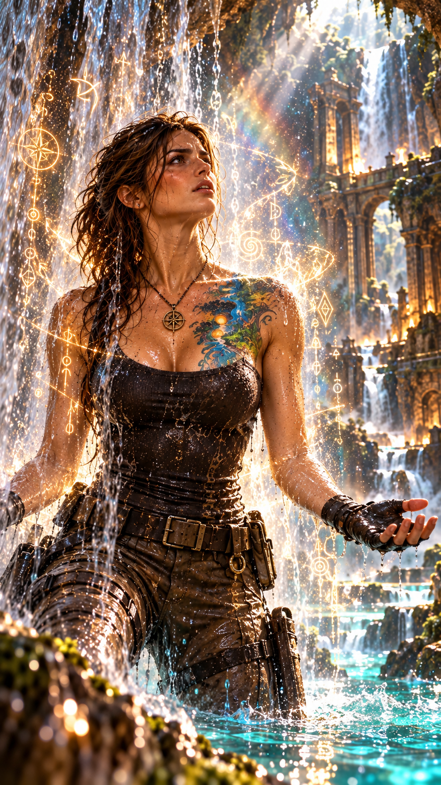
À sa place apparaît progressivement une marque.
Une cascade.
Un tatouage aux couleurs éclatantes, presque irréelles, dans lequel semblent avoir été intégrés les symboles qui recouvraient autrefois chacune des faces de la boîte.
Root passe doucement ses doigts dessus.
Une sensation de bonheur intense l’envahit.
Mais également autre chose.
Des connaissances.
Des impressions.
Des souvenirs qu’elle ne reconnaît pas.
Un savoir immense dont elle ignore encore comment se servir.
Soudain, l’un de ses drones l’alerte.
Quelqu’un approche.
Amy.
Impossible de ressortir par le même chemin.
Root s’enfonce davantage dans la roche et atteint une rivière souterraine.
Le courant forme une sorte de gigantesque toboggan naturel.
— Évidemment.
— Pourquoi prendre une sortie normale ?
Root se laisse glisser dans le courant.
Plusieurs minutes plus tard, la lumière réapparaît.
Le courant la projette dans une rivière située à plusieurs kilomètres de la grotte.
La boîte de Pandore n’existe plus.
Du moins…
plus sous la forme d’une boîte.
Direction le Mexique.
Hope a enterré son frère, Ted.
Elle est désormais la dernière représentante de la famille Awake par le sang.
Elle a vendu l’emplacement de l’ancien restaurant et transformé une grande partie de l’hacienda en restaurant français haut de gamme.
Grâce aux nouvelles technologies de Peter, elle a également entièrement repensé la sécurité.
Extérieur. Intérieur. Accès. Surveillance.
Tout est sous contrôle.
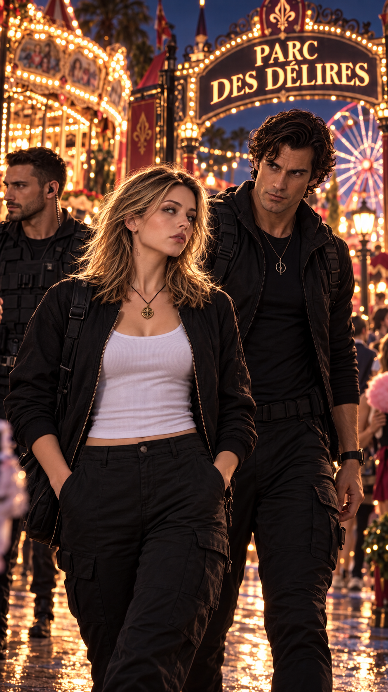
Betty et Anna vivent à seulement quelques kilomètres.
Ce jour-là, Anna est en route pour rejoindre un petit groupe d’amis.
Elle traverse le Parc des Délires, suivie de très près par ses gardes du corps.
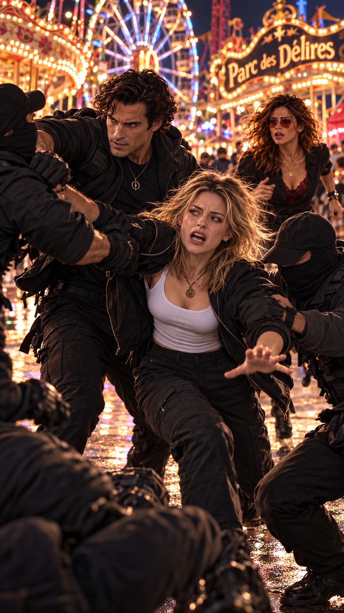
Soudain, plusieurs hommes surgissent.
Tout va très vite.
Ils veulent enlever Anna.
Ses gardes interviennent immédiatement.
Mais les assaillants sont trop nombreux.
Trop organisés.
Chaque mouvement semble avoir été anticipé.
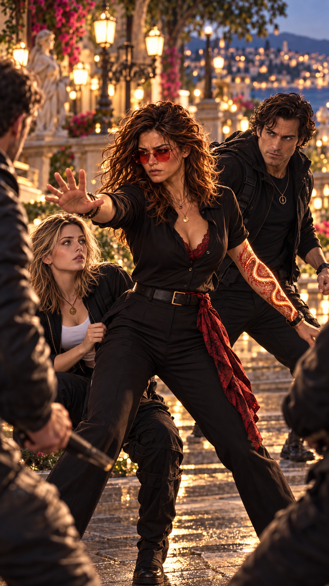
Un à un, les gardes du corps tombent.
Plusieurs hommes maîtrisent Anna et l’entraînent vers un véhicule.
Puis, soudain…
une femme surgit.
Quelques secondes suffisent.
Les gestes de Hope sont d’une précision stupéfiante.
Rapides.
Fluides.
Presque impossibles à suivre.
Les assaillants tombent les uns après les autres.
Hope attrape la main d’Anna et la ramène auprès du seul garde encore conscient.
— Ça va aller maintenant. C’est terminé. Vous ne risquez plus rien.
Hale traduit immédiatement en espagnol.
Puis son regard rencontre celui de Hope.
Quelque chose change.
Il incline discrètement la tête.
Un salut presque imperceptible.
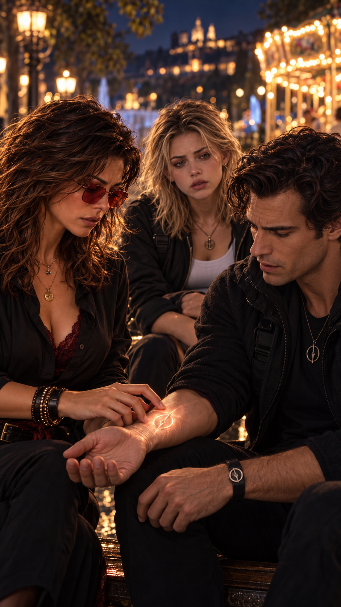
Hope saisit l’avant-bras droit de Hale pour l’aider à se relever.
Sa main glisse lentement jusqu’à son poignet.
Une marque apparaît.
Un tatouage thermosensible.
La marque des Sentinelles de la Lumière.
Anna comprend parfaitement qu’il se passe quelque chose.
Mais elle ignore totalement quoi.
— Comment vous appelez-vous ?
Hope lui répond directement en espagnol :
— Je m’appelle Hope.
Puis elle se tourne vers Hale.
— Prenez bien soin d’elle, Sentinelle.
Hale se fige.
— Le temps est devenu précieux.
À partir de maintenant, il nous est compté.
Betty abandonne immédiatement son travail et se précipite auprès de sa fille.
Anna raconte tout.
Une inconnue.
Une Française.
Capable de neutraliser presque seule tout un groupe d’hommes.
Betty et Anna arrivent rapidement à la même conclusion :
elles veulent savoir qui est Hope.
Quelques jours plus tard, une invitation arrive à l’hacienda.
Inauguration d’un nouveau restaurant français haut de gamme.
Anna est certaine qu’il appartient à Hope.
Betty, elle, n’aime pas les coïncidences.
Une tentative d’enlèvement.
Une inconnue surgissant exactement au bon moment.
Puis cette invitation.
Betty se sert un verre de vin.
Et appelle Lucy.
— Quelqu’un a essayé d’enlever Anna.
Un silence.
— Quoi ?
— Elle va bien.
Mais j’ai besoin de savoir à qui j’ai affaire.
Je veux que tu te renseignes sur une Française qui vient de reprendre l’hacienda Awake.
— Son nom ?
— Hope.
Quelques minutes plus tard, Lucy accepte de venir au Mexique.
Elle restera auprès d’Anna jusqu’à ce qu’elles comprennent qui a tenté de l’enlever.
Peter travaille sur une nouvelle invention.
Depuis quelque temps, presque toutes ses innovations poursuivent le même objectif :
protéger, dissuader et neutraliser lorsque cela devient nécessaire.
Root et Hope sont souvent les premières à tester ses créations.
Max vient d’achever plusieurs semaines d’enquête.
Son sujet : certains réseaux discrets qui tentent d’influencer des événements, des opinions et des décisions pour défendre leurs propres intérêts.
Max dispose de documents, de transactions et de témoignages.
Mais il ignore encore jusqu’où s’étend réellement ce système.
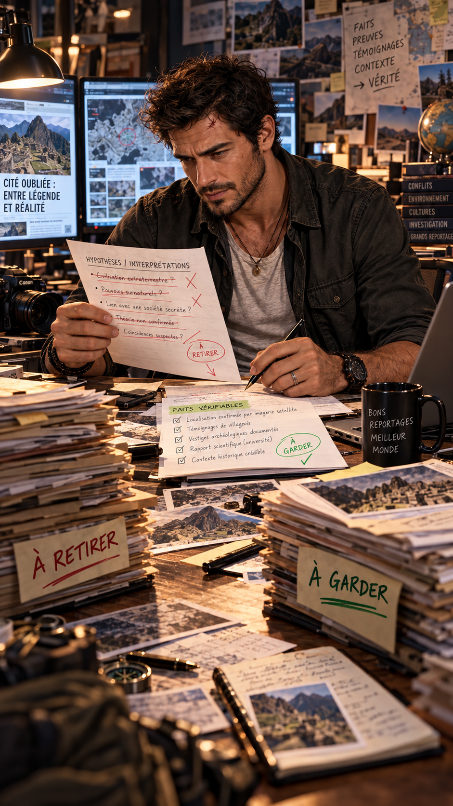
Pour la première fois depuis longtemps, Max hésite devant une vérité.
Pas parce qu’il doute de ses preuves.
Mais parce qu’il doute de ce qu’elles pourraient provoquer.
Les faits et rien que les faits.
Mais existe-t-il des vérités que l’on ne peut pas jeter brutalement au visage du monde ?
Max décide de montrer les faits établis.
Les connexions vérifiables.
Les contradictions.
Les zones d’ombre.
Mais pas toutes ses conclusions.
Il laisse au spectateur la possibilité de construire les siennes.
Le reportage terminé, une autre enquête l’attend.
Élie Santalucibel.
Max contacte Hope.
— J’espère que ton restaurant a une chambre de libre.
— Pourquoi ? Tu comptes enfin venir travailler sérieusement ?
— Très drôle. Mon reportage français est terminé.
Prochaine destination : le Mexique.
Lucy poursuit ses recherches.
Soudain, IA2 l’interrompt.
— J’ai retrouvé Root Tempass.
— Où est-elle ?
— Elle a embarqué ce matin sur un vol en provenance du Vietnam.
Destination :
Mexique.
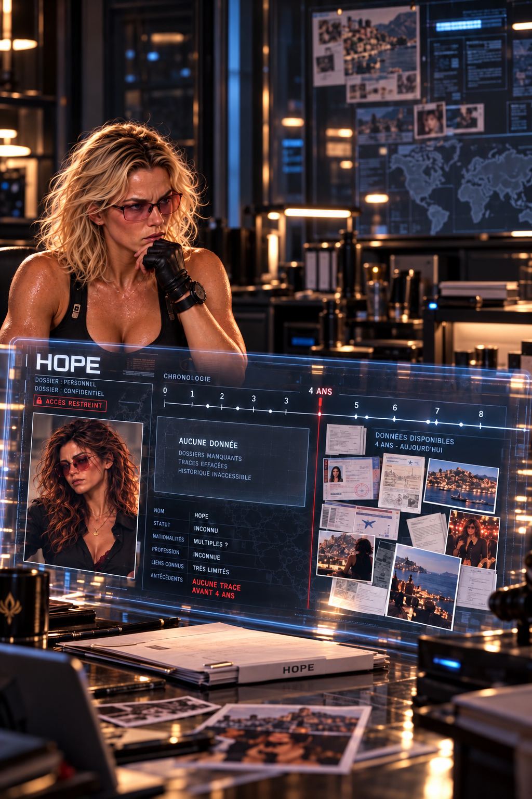
IA2 poursuit ses investigations sur Hope.
Les résultats sont étrangement pauvres.
Hope Awake.
Française.
Cheffe cuisinière.
Propriétaire du Monde d’ici et d’ailleurs depuis quatre ans.
Et presque rien d’autre.
Aucune donnée exploitable avant cette période.
Lucy recherche alors la famille Awake.
Ted avait été recueilli puis adopté après la disparition de sa famille dans le crash d’un Airbus A380 en Chine.
Lucy demande la liste complète des passagers.
Puis s’arrête sur une information.
Une fillette de douze ans.
Son corps n’avait jamais été retrouvé.
Reconstituer le passé de Hope
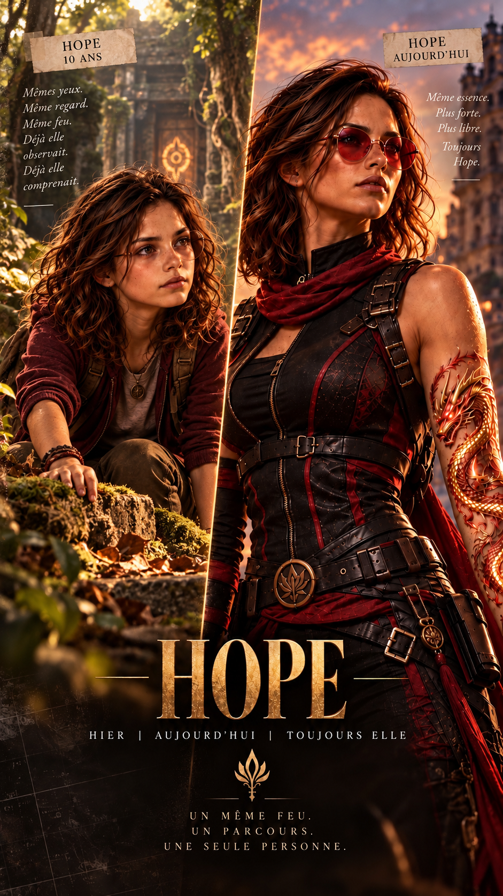
Lucy place une photographie récente de Hope à côté de celle de l’enfant.
— Fais-moi une simulation.
Suppose que cette enfant n’est pas morte dans le crash.
Fais vieillir son visage jusqu’à l’âge actuel de Hope.
Quelques instants plus tard, IA2 affiche son résultat.
Concordance morphologique très élevée.
Lucy reste immobile.
— Donc cette gamine pourrait être elle.
— Hypothèse plausible.
Lucy observe la carte du monde.
France. Vietnam. Mexique.
— Pourquoi tout le monde finit-il au Mexique ?
Root vient tout juste d’atterrir.
Hope l’attend à l’aéroport.
Quelques minutes plus tard, elles prennent la route de l’hacienda.
Root est beaucoup trop impatiente pour attendre.
Elle ouvre légèrement son chemisier.
— Regarde.
Hope découvre la marque.
Une magnifique cascade, parcourue des symboles de la boîte.
— Oh… elle est magnifique.
Hope approche doucement sa main.
Elle ne touche même pas réellement la peau de Root.
Pourtant…
la marque réagit.
Les contours de la cascade s’illuminent.
Puis les symboles s’éveillent à leur tour.
Comme si quelque chose circulait entre Hope et la marque.
Une énergie.
Des informations.
Ou peut-être les deux.
Hope et Root se regardent.
Pendant quelques secondes, aucune ne parle.
Puis elles éclatent de rire.
Un rire spontané.
De soulagement.
De bonheur.
Et quelque part, de victoire.
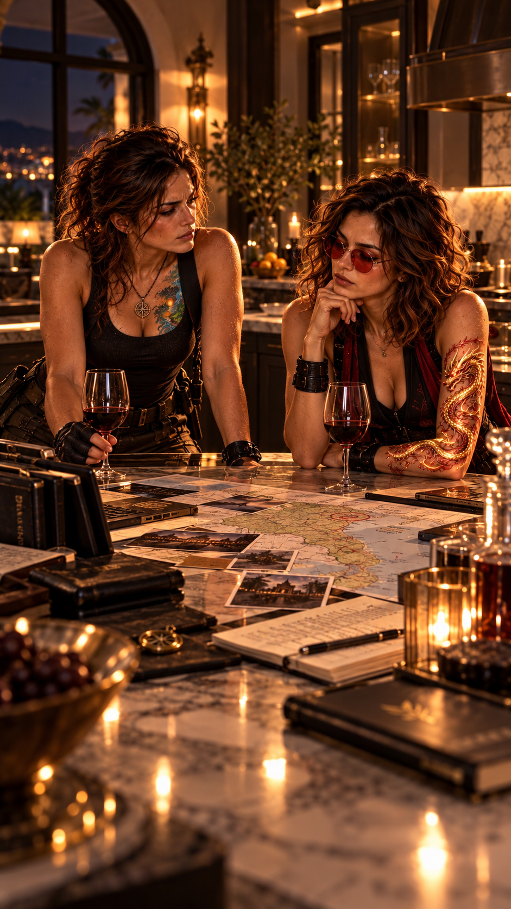
Plus tard, elles se retrouvent dans la cuisine de l’hacienda.
Hope ouvre une bouteille de vin.
Elles parlent encore du Vietnam, d’Amy, de la grotte et de la boîte.
Puis Hope demande :
— Tu as eu le temps de voir avec Clark s’il pouvait venir à l’inauguration ?
Root sourit.
— Oui. Il sera là.
Hope lui propose ensuite de découvrir un cénote particulier le lendemain.
— Évidemment que je suis partante.
Toute la propriété s’affaire pour préparer l’arrivée de Lucy.
Après la tentative d’enlèvement, chacun sait qu’elle va tout passer au crible.
Lucy arrive avec Clive.
Aucun détail ne lui échappera.
Anna termine déjà ses cours de français.
Betty lui propose de pratiquer avec Hale.
Anna proteste immédiatement.
— Alors qu’avec Hope, j’ai tellement de questions à lui poser.
Betty soupire.
— Nous ne connaissons même pas cette femme.
— Raison de plus.
Début d’après-midi.
Le jet privé de Peter Evanos atterrit avec près d’une heure d’avance.
Peter et Max échangent un regard satisfait.
Ils ont eu exactement la même idée.
Faire une surprise aux filles.
Peter sort l’un de ses nouveaux dispositifs.
Une créature ressemblant à un magnifique oiseau prend son envol.
Le Phénix.
Ses mouvements sont naturels.
Son plumage. Sa respiration. Ses réactions.
Tout semble vivant.
— Peter… qu’est-ce que tu as fabriqué ?
Peter avoue avoir utilisé une partie des travaux de Betty Flores sans lui demander réellement son autorisation.
Max le fixe.
— Tu es mort.
— Probablement.
Après l’audit de sécurité de l’hacienda Flores, Lucy rejoint Anna près de la piscine.
Son téléphone vibre.
Root.
Lucy relit le message une seconde fois.
Elle est contente.
Et surtout rassurée.
Root va bien.
Elles échangent plusieurs messages.
Root lui révèle finalement qu’elle se trouve elle aussi au Mexique.
Et qu’elle connaît un excellent restaurant français qui ouvrira très bientôt dans le Yucatán.
Lucy sourit.
Mais sa curiosité professionnelle se réveille immédiatement.
Root connaîtrait-elle Hope ?
Lucy profite ensuite d’un moment seule avec Betty.
Elles parlent d’Élie.
De leur passé.
Et surtout d’Anna.
Betty finit par avouer :
— J’ai peur pour elle, Lucy.
J’ai peur qu’on lui fasse du mal.
J’ai peur de ne pas savoir la protéger.
Et j’ai peur de la décevoir.
Lucy écoute sans l’interrompre.
— J’aime la femme que tu es devenue.
Betty prend sa main.
— Je t’ai souvent prise pour modèle.
Lucy reste silencieuse.
Puis murmure :
— Je suis fière d’être ta sœur.
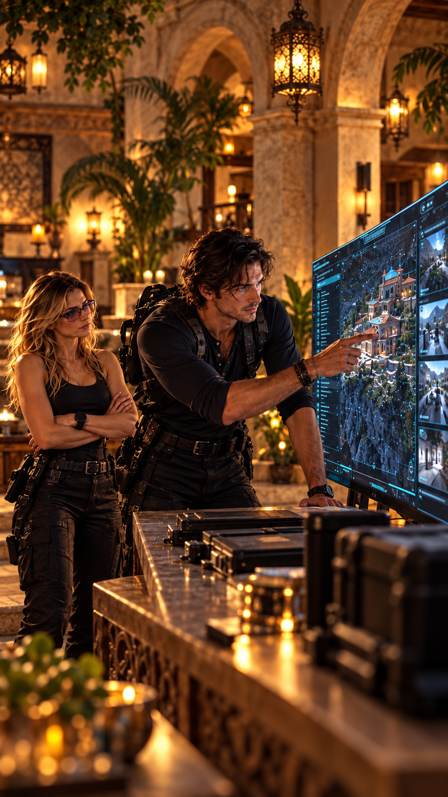
Clive part discrètement observer l’hacienda Awake.
Lorsqu’il revient, son expression est inhabituelle.
— Ta copine Root n’est plus la seule à posséder un système de sécurité ultra haut de gamme et inconnu du marché.
Lucy devient immédiatement attentive.
— Le même ?
— Pas nécessairement identique. Mais suffisamment proche.
Lucy comprend soudain.
Hope.
Root lui avait parlé d’une amie qui lui avait enseigné ses fameux « petits trucs au cas où ».
Le puzzle commence à prendre forme.
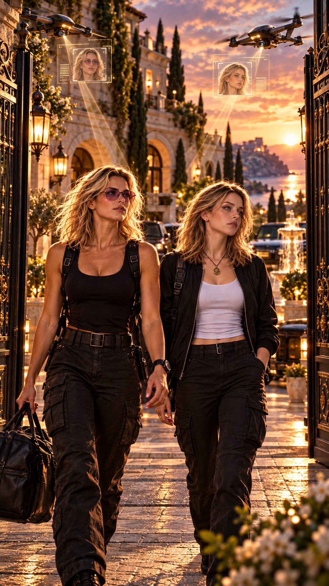
Lucy et Anna prennent la route en direction de l’hacienda Awake.
Lorsqu’elles arrivent devant le portail, plusieurs drones apparaissent.
Ils analysent leur véhicule.
Puis les deux femmes.
— Lucy Adverse. Division de la cybercriminalité, Los Angeles.
— Anna Flores. Étudiante en journalisme. Fille de Betty Flores.
Quelques secondes plus tard :
Autorisation accordée.
Le portail s’ouvre.
Un homme entièrement vêtu de noir vient à leur rencontre.
— Bonjour, Mesdames Adverse et Flores.
Madame vous prie de bien vouloir l’excuser de vous faire patienter.
Il leur indique le jardin.
— Que puis-je vous servir ?
Anna demande :
— Qu’est-ce qu’elle boit habituellement ?
— Hope. Servez-moi la même chose.
Lucy sourit.
— Faites de même pour moi.
James semble amusé.
— Madame m’avait dit que vous me demanderiez probablement cela.
Deux Fresh Cactus Frenchies.
Du mouvement attire l’attention de Lucy.
Dans le jardin, elles découvrent une vaste plateforme d’entraînement.
Une femme se trouve en son centre.
Hope.
Les yeux bandés.
Plusieurs adversaires l’attaquent simultanément.
Chaque attaque semble anticipée.
Chaque mouvement économisé.
Chaque riposte précise.
Puis un nouvel adversaire apparaît.
Masqué.
Plus rapide que les autres.
Cette fois, l’affrontement dure plus longtemps.
Hope finit par le neutraliser.
Puis elle lui parle.
— N’attaque pas comme une hyène.
Tu n’es pas une meute.
Sois plutôt la lionne.
Observe.
Attends.
Cherche le plus infime changement dans mon mouvement.
Puis :
Sois le léopard.
Réussis ou échoue.
Mais n’essaie pas.
Fais-le.
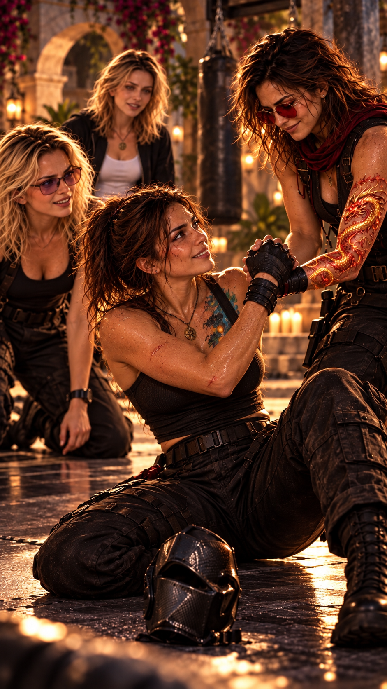
Hope aide son adversaire à se relever.
Celui-ci retire son masque.
Lucy reste figée.
— Root…
Anna se tourne vers elle.
— Tu la connais ?
Lucy secoue lentement la tête.
— Oui.
Comme tu me l’as dit tout à l’heure…
le monde est petit.
Vraiment, vraiment petit.
Les quatre femmes se retrouvent enfin face à face.
Root sourit.
— Le monde est effectivement très petit.
Ou alors le destin possède une façon plutôt particulière de réunir les gens.
Hope répond :
— Personne n’échappe complètement à sa destinée.
La vraie question est plutôt de savoir si nous sommes prêts à lui faire face…
ou si nous préférons détourner les yeux jusqu’à risquer de perdre notre propre raison d’être.
Les quatre femmes s’installent dans le salon extérieur.
Anna pose rapidement sa première question :
— Les hommes en noir… qui sont-ils ?
Hope répond :
— Les Sentinelles de la Lumière.
Pour le moment, imagine-les comme des gardes du corps extrêmement spécialisés.
Root précise que Hope est plutôt leur guide.
Leur maître d’armes.
Leur professeur.
Lucy comprend alors.
Hope est bien l’amie qui a appris à Root ses fameux « petits trucs utiles au cas où ».
Lucy observe Hope.
— Que faisiez-vous au Parc des Délires au moment où Anna a été agressée ?
— Je traversais le parc pour rejoindre l’ancien restaurant de mon frère Ted.
Celui que le cartel Santalucibel a incendié.
Ted et son chef sont morts dans cet incendie.
Un silence tombe.
Lucy poursuit :
— Comment une femme seule a-t-elle réussi à empêcher un enlèvement alors que six professionnels entraînés ont échoué ?
Root veut intervenir.
Hope l’arrête.
— Elle compte pour toi.
Et tu lui fais confiance.
Ton amie est mon amie.
Puis Hope explique avoir été formée très jeune au combat, à la survie, à l’observation et à la maîtrise de soi.
Dans son village, certains la considèrent aujourd’hui comme un maître Sentinelle.
Root sourit.
— Tu veux dire Maître Unique ?
Hope lève les yeux au ciel.
Hope propose alors un petit cours de self-défense.
Root entraîne Lucy.
Hope prend Anna avec elle.
Root désarme Lucy.
Encore.
Et encore.
Mais elle lui explique chaque mouvement avec une patience presque infinie.
— Tu utilises tes yeux comme si c’était ton unique moyen de comprendre ce qui t’entoure.
Ferme-les.
Maintenant, écoute.
De l’autre côté, Hope apprend à Anna à observer :
les épaules, le regard, les appuis.
Le corps décide souvent avant l’esprit conscient.
Plus d’une heure passe.
Elles retournent finalement au salon extérieur.
Avant de reprendre la discussion, Hope devient soudain plus sérieuse.
— J’aimerais vous proposer une règle.
Une seule.
Aucun mensonge.
Nous n’avons pas l’obligation de répondre à toutes les questions.
Nous pouvons dire que nous ne sommes pas prêtes.
Nous pouvons refuser de révéler ce qui ne nous appartient pas.
Mais si nous répondons…
alors nous disons la vérité.
Et rien de ce qui est confié ici ne doit être utilisé contre celle qui l’a partagé.
Root tend sa main au centre de la table.
Hope pose la sienne dessus.
Anna les rejoint.
Puis toutes trois regardent Lucy.
Lucy ne bouge pas.
Un pacte de confiance.
Sans procédure.
Sans preuve.
Sans garantie.
Tout ce qu’elle déteste.
Tout ce contre quoi son métier l’a entraînée.
Sa raison lui dit de refuser.
Son instinct lui dit exactement le contraire.

Lucy prend une inspiration.
Puis pose lentement sa main sur celles des trois autres.
— D’accord.
Anna sourit.
Root également.
Hope ne dit rien.
Lucy ajoute :
— Mais je vous préviens…
J’ai beaucoup de questions.
Root éclate de rire.
— Ça, personne n’en doutait.
Les quatre femmes rient.
Mais Lucy sait que quelque chose vient de se produire.
Quelque chose qu’elle aurait cru impossible quelques heures auparavant.
Elle vient d’accorder sa confiance sans preuve.
Pas aveuglément.
Pas complètement.
Mais suffisamment pour accepter d’entrer dans ce cercle.
Pour la première fois depuis très longtemps, Lucy choisit de ne pas seulement suivre ce que lui montrent les faits.
Elle décide aussi d’écouter son instinct.
Et sans encore le savoir…
elle vient peut-être de faire le premier choix qui changera véritablement sa destinée.
L’union fait la force